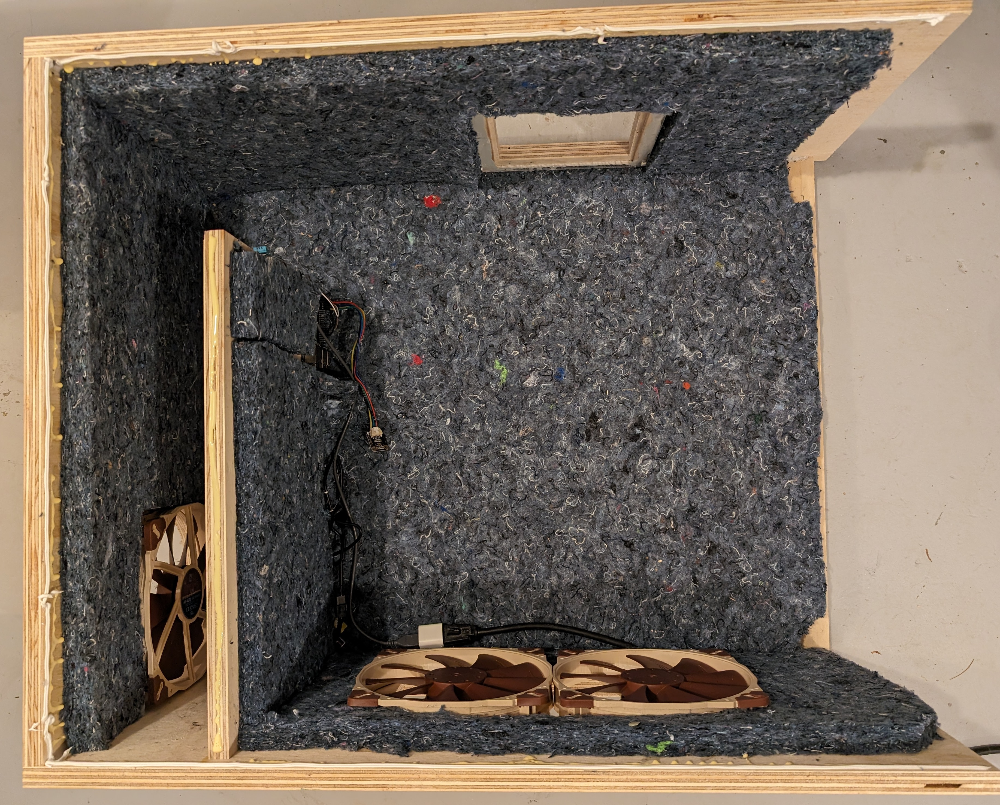
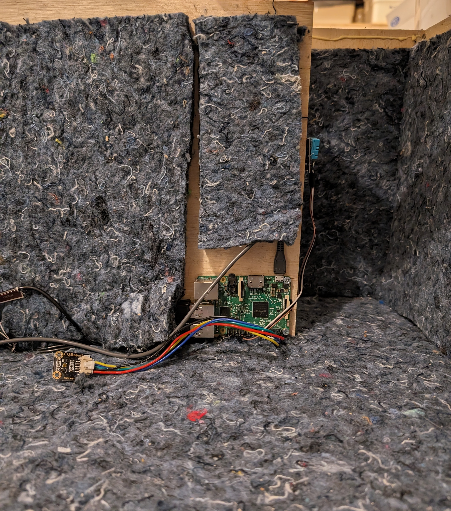
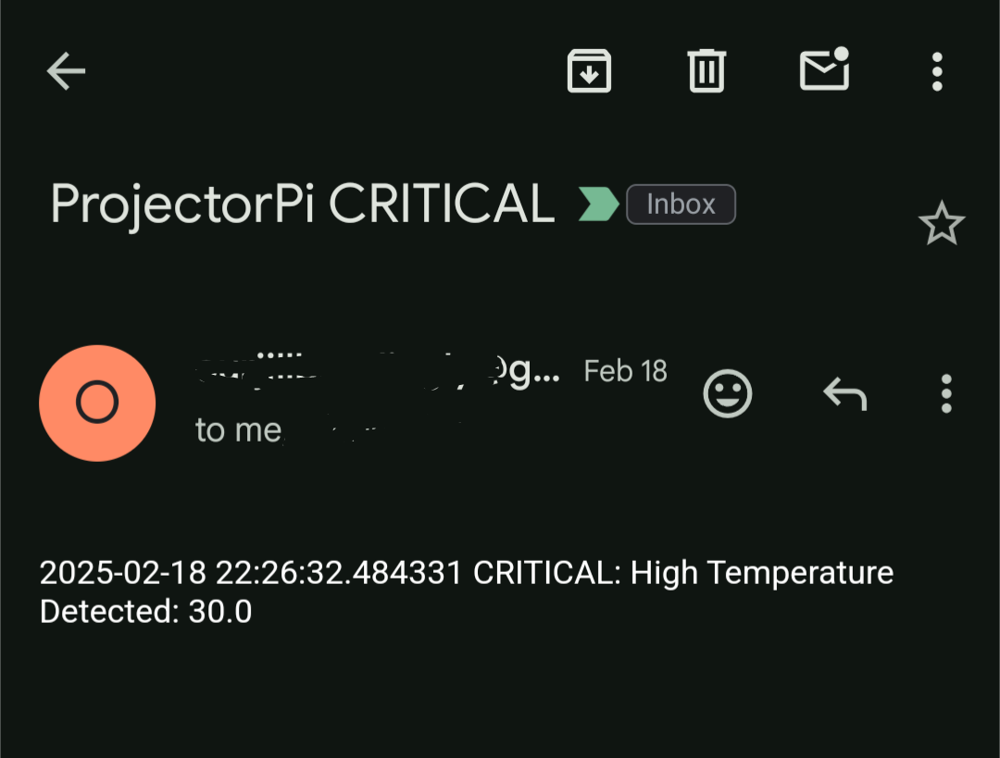
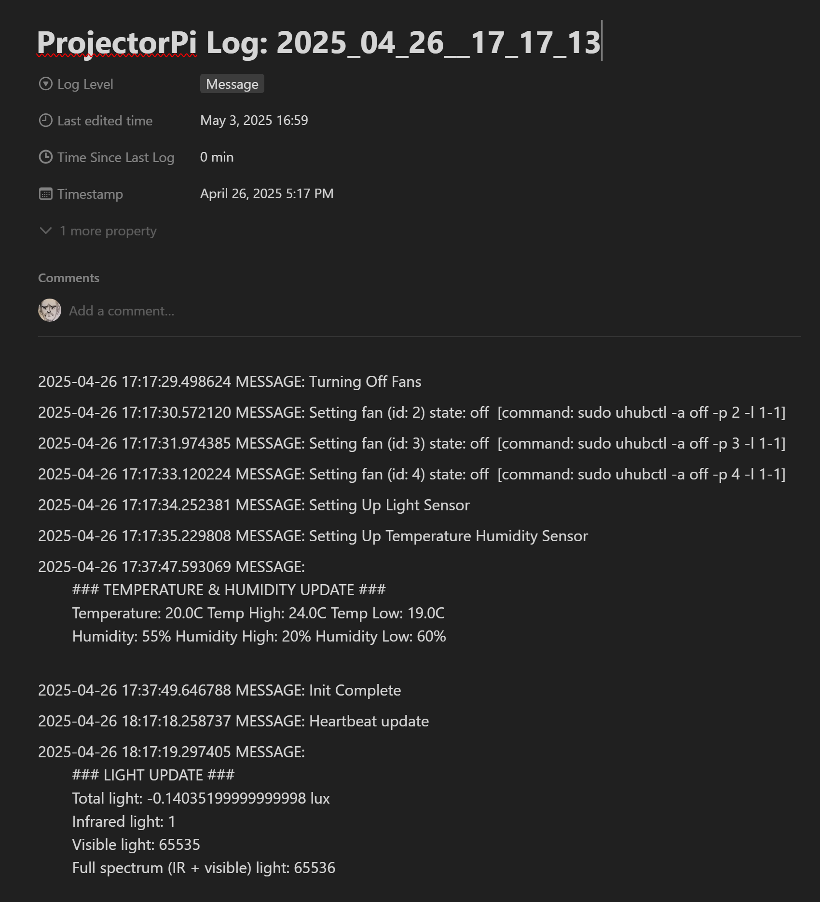

I upgraded the projector in my TV room, which has been a great improvement to visual quality, but of course a
bigger projector means more noise. I found a few ideas online for a sound-dampening enclosure to keep the noise
down, but what started as a simple padded box turned into a full-blown smart home DIY project.
The box construction is fairly simple: a rectangular box with a square section to house the projector and a
smaller channel to allow side ventilation while providing obstruction for fan noise from the projector. Room air
is pulled in through the side opening and pushed out a hole in the back, which feeds into a duct in the wall.
Quiet fans at both openings help provide a steady flow of air for temperature regulation. The entire inside was
lined with packing insulation for additional dampening and to help decouple vibrations from the projector
resting on the box. A thick piece of media glass in the front allows light through while blocking most of the noise.

Instead of providing the fans with constant power and letting them run all the time, I only have them on when
the projector is running. To do that, I plugged them into a Raspberry Pi which is able to enable and disable USB
power via script.
To determine when the fans should turn on, a light sensor connected to the Raspberry Pi — pointing at the
projector lens — allows the Pi to determine when the projector is on and enable the fans. The Pi then turns the
fans off after the light has dipped below a threshold for about 5 minutes, just to make sure a dark scene in a
movie doesn’t cause the fans to turn off!
With a Raspberry Pi in place, I thought it would make sense to add a temperature sensor to the box that could
help alert me in the event that the temperature in the box was getting too hot (likely indicating some kind of
airflow problem). I looked up the projectors safe operating temperature range and set it near the top end of
that, about 90 degrees.

Getting that temperature was one thing, but exposing it somewhere other than a log file that sat on the
Raspberry Pi (which I don’t frequently check) required some extra work. I created an email account for alerting
and allowed the Raspberry Pi to send me emails from that account, fed with specific info about the Alert

As mentioned, after getting everything set up, I don’t often check on the Raspery Pi itself, since it’s locked
inside the box behind the projector, I have to SSH into it in order to access the script and any of its log
files. I thought it might be fun to be able to check the logs a little more easily than remoting in. I’ve been a
pretty big Notion fan for a while, so this seemed like a fun opportunity to try out
Notion API, which allowed me to create and update
Notion pages from the Raspberry Pi. With this, I have the Pi create a new entry in my Home Automation database
every time the Pi starts up, effectively creating a remote log file. Any time the script would log an event to
a local file, it also sends that event to the Notion page, allowing me to quickly view the logs from my phone
and computer. A fun perk of that setup is that I can view the time since the log was last updated, which should
always be less than an hour for the periodic heartbeat status update messages. That way if there is ever a period
longer than that, I know there might be some issue that I need to look into.

All in all it’s an overly-complicated solution to a simple problem, but I had a lot of fun doing it. Working
with Raspberry Pi, especially when using the IO bus to connect real world input/output to scripts, is such a
blast. I think it’s because I spend most of my time completely in software land, interacting with hardware is a
fun change of pace.